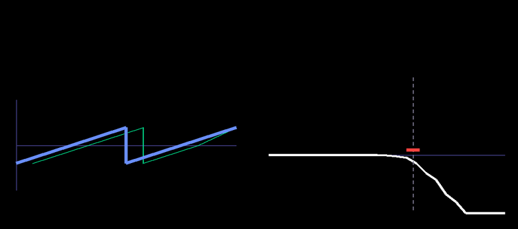
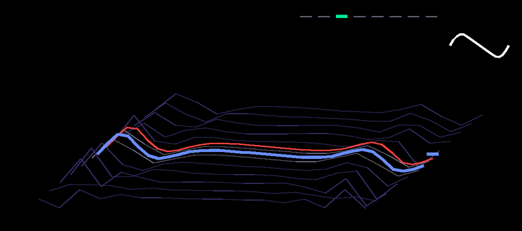
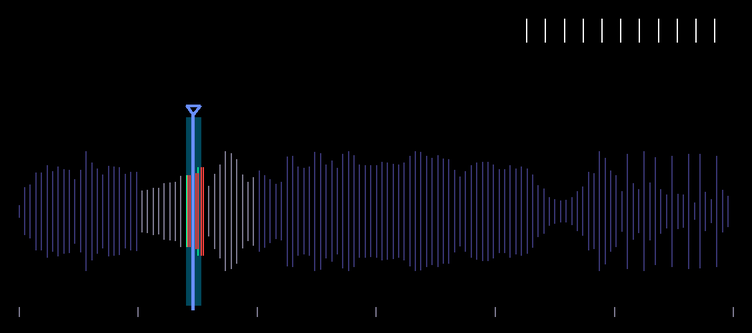
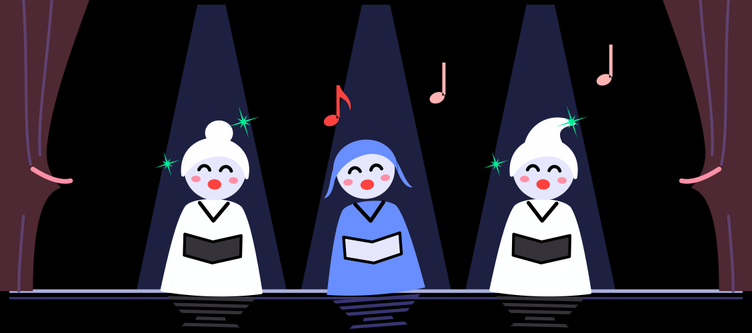
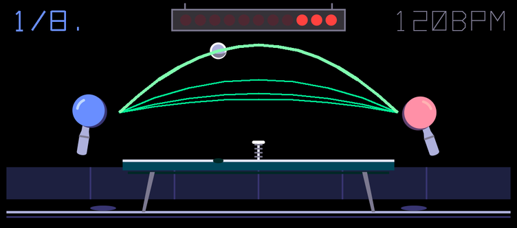
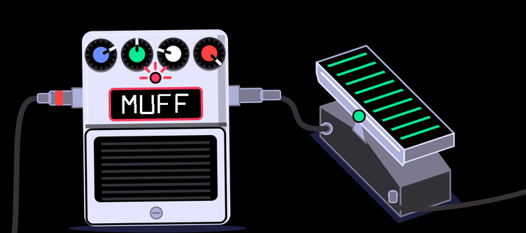
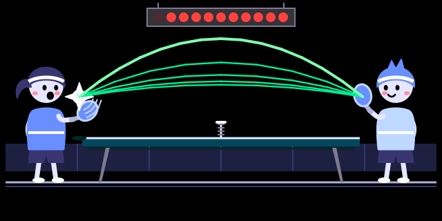
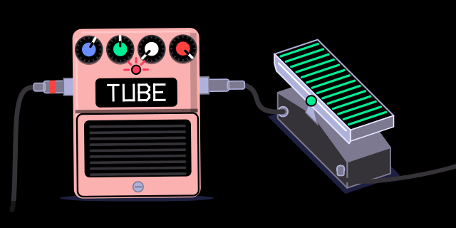
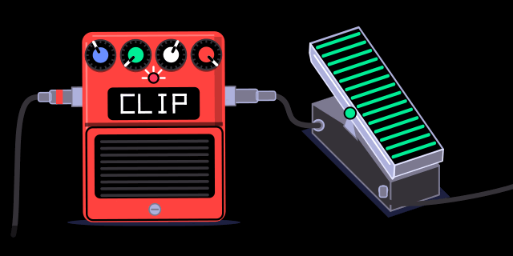

They are patched into TE's own firmware: every stock engine, FX and feature keeps working. Like an overdub on tape, it adds new layers over TE's firmware without erasing anything underneath.
Not affiliated with or supported by teenage engineering. You flash this at your own risk (see safety).






Every knob drives part of the picture, in its own colour.



| blue | green | white | orange | |
|---|---|---|---|---|
| synth engines — in the engine list with their own presets and screens | ||||
| vatwo-oscillator virtual analog, resonant low-pass | wave (saw → square → pulse) | osc 2 detune | cutoff | resonance |
| wavetable8 banks of morphing wavetables | position | bank | warp | unison |
| graingranular; plays a built-in bank, or the sample in any sampler slot | position | grain size | density | spray |
| FX — on synth, drum and master; stereo as master FX | ||||
| ensembleJuno / string-machine chorus | rate | depth | ensemble (Solina-style vibrato) | mix |
| pingpongping-pong delay | time | feedback | tone | mix |
| distortionTUBE, MUFF, FUZZ, CLIP, FOLD, CRUSH | drive | voice (low-pass ↓, wah ↑) | character | mix |
overdub-*.zip from releases and unzip it.python3 apply.py op1_246.op1 (Python 3.10+, no other dependencies) writes OVERDUB.OP1. It checks that your file is stock 246 and that the result is exactly the expected image.OVERDUB.OP1 to the OP-1 disk, eject. Same procedure as an official update.The release contains only our code, our database rows (engine/FX names and presets) and our SVG screens. TE's firmware never leaves your computer.
te-boot.ldr stays byte-identical to stock (the tools refuse otherwise), so you can always go back: hold COM at power-on, upload stock op1_246.op1.FRC, RBT or KEY in it: the OP-1's updater treats those as commands. apply.py and build.py refuse such names.